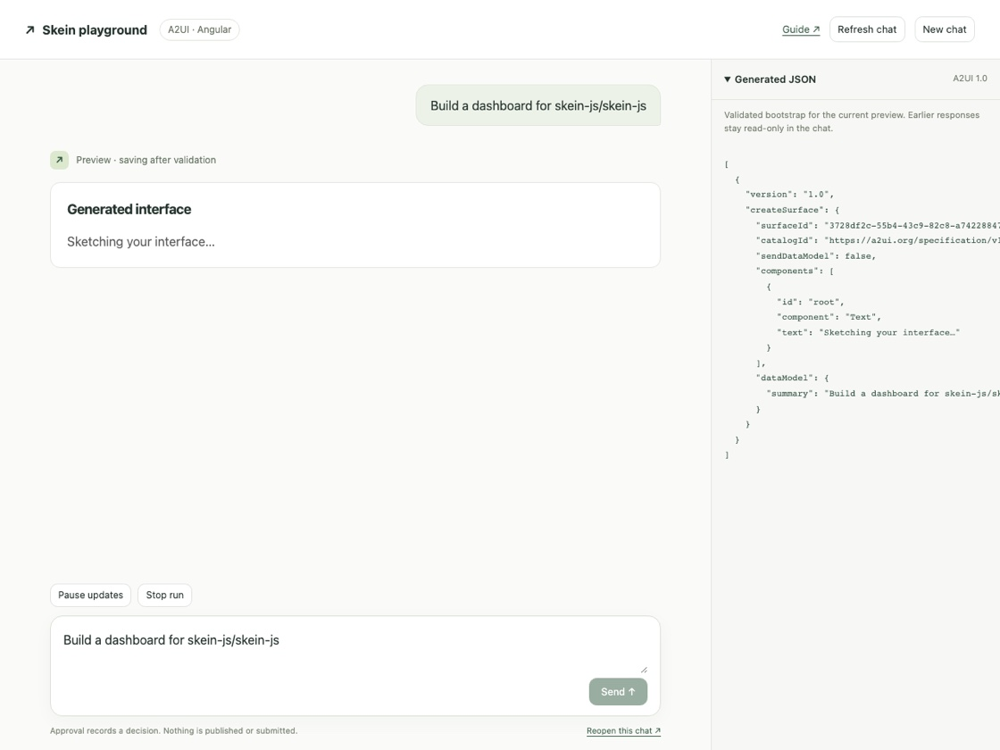
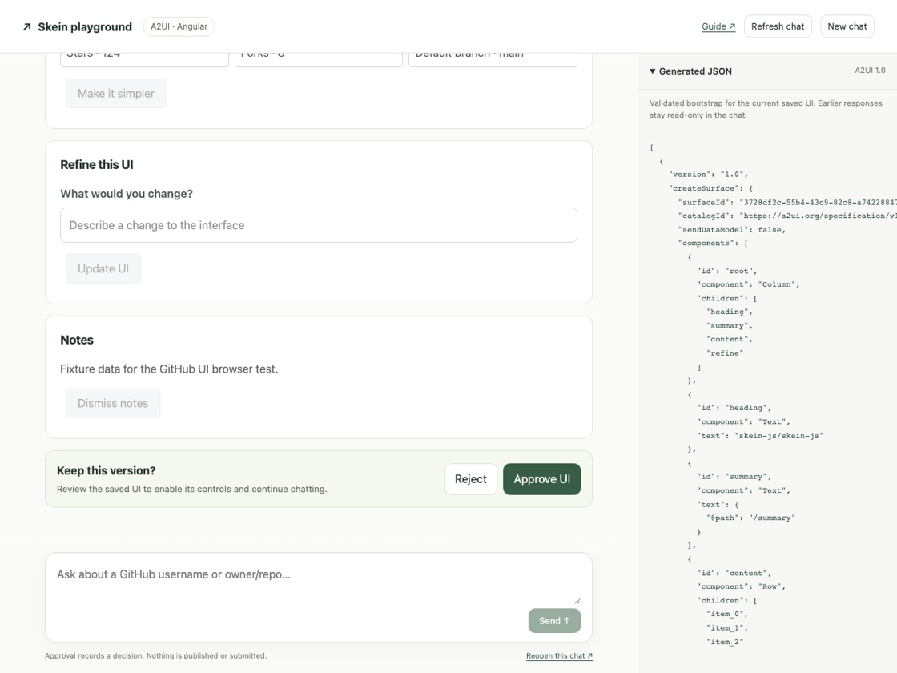
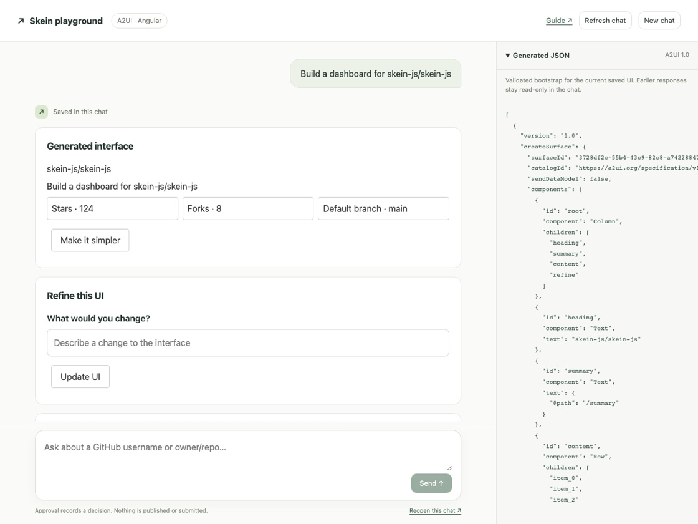

What comes back when you reopen the chat?
Follow the screenshots with sample data. You can try the replay without an account or an install.
You send this prompt and the app starts building the dashboard.
Build a dashboard for skein-js/skein-js with its description, stars, and forks.

Now imagine you close the tab while the server is still working. By the time you return, the draft has reached review. Make a prediction, then reveal what happens.
Reopen the saved chat
Your dashboard is waiting for you. The original request and the pending review return with it. The thread ID in the URL tells Skein which saved conversation to load.

Reveal what happens when you approve
LangGraph continues from the review step and records your decision. The app now lets you change the dashboard. Approval is saved inside the demo.

What if you choose New chat?
You get an empty conversation, and your first request starts a new thread. Open the original chat URL to find your draft again.
What did Gemini, LangGraph, and Skein each do?
Gemini requested a public GitHub lookup, then used the returned description, stars, and forks to draft a view. LangGraph ran the lookup and paused the workflow for review. Skein ran the workflow on the server, streamed progress to the browser, and loaded the saved draft when you returned. Angular turned the view description into the dashboard you see.
Run the demo on your machine
Allow 30–45 minutes. Start with the finished TypeScript example. Your goal is to make a dashboard, restart the server, and find the same draft waiting for you.
-
Get the tools and download the example
You’ll need Git to download the code, Node.js to run it, and pnpm to install its dependencies.
Install or check the tools
Install Git and Node.js 24 or 26 for your operating system. Open a new terminal and run these commands to check your versions.
git --version node --version pnpm --versionIf pnpm is missing or uses a different version, install the version used by this example. Then run
pnpm --versionagain and check for9.15.0. Use the same Node.js version in both terminals.npm install --global pnpm@9.15.0In a terminal, run these commands from a folder where you keep projects. The commit ID selects the version used in the workshop.
git clone https://github.com/skein-js/skein-js.git lusaka-workshop cd lusaka-workshop git switch --detach 1b1a4d4018d1dad718054cd4f71d65f582e653a2 pnpm install --frozen-lockfileCheck your progress. Your terminal should now be in
lusaka-workshopand the install should finish without an error. -
Start the backend and open the playground
Create a Gemini API key in Google AI Studio. The local example uses the Gemini Developer API. In your editor, open
lusaka-workshopand create a file named.envinsideexamples/a2ui. Add these two lines and replaceyour-own-keywith your key. Keep the key in that file.A2UI_MODEL=google:gemini-3.5-flash-lite GOOGLE_API_KEY=your-own-keyTerminal 1 · Skein backend. From
lusaka-workshop, build the example and its dependencies.pnpm exec nx run example-a2ui:buildIn the same terminal, move into the example folder and start Skein. The SQLite file keeps your dashboard on disk so it can survive a restart.
cd examples/a2ui node ../../packages/cli/dist/index.js dev --host 127.0.0.1 --port 2025 --store sqlite --queue sqlite --sqlite-path .skein/lusaka.sqliteTerminal 2 · Angular frontend. Leave Terminal 1 running. Open a second terminal in the
lusaka-workshopfolder and run this command.pnpm exec nx run example-a2ui:serveCheck your progress. When Angular is ready, open the playground at localhost port 3007. You should see “Explore public GitHub data” and a prompt box.
What if the playground fails to start?
- If the page does not open, check that Terminal 2 is still running and that you opened port 3007.
- If the page opens but Send fails, check Terminal 1. For a missing key, check
examples/a2ui/.envand restart Skein. - If GitHub rate-limits the lookup, wait and retry or continue with the browser replay.
-
See what survives a restart
Build a dashboard for skein-js/skein-js with its description, stars, and forks.
- Paste the prompt into the playground and select Send.
- If you catch it while it’s building, select Pause updates and then Reconnect. If the draft is already ready, go straight to the next step.
- When you see Approve UI, leave the approval pending. Copy the full URL from the address bar and close the tab.
- In Terminal 1, press Ctrl+C to stop Skein. Press the up arrow to recall the same SQLite command and run it again. Leave Terminal 2 running.
- Once Skein is listening again, open your saved URL in a new tab. Look for your original prompt, the same dashboard, and the same review controls. Select Approve UI, then reload and check that the approval is still there.
Check your progress. The approval survived the reload. The URL’s thread ID pointed Skein to the state it had already saved in SQLite.
-
Make a change of your own
On the same chat, send “Show forks before stars.” You can leave out the repository name. The next run gets the saved dashboard as context. Compare the new draft with the earlier one, then approve or reject the change.
Try New chat with the same short prompt. What would the agent need to ask you before it could make a dashboard? Or start with a public repository you actually use.
Find the moving parts in TypeScript
See where Skein loads the graph, how LangGraph pauses at review, and how the browser uses the thread ID.
When you’re done, press Ctrl+C in both terminals. See where the same pieces run in the Cloud Run deployment or watch the Skein building-blocks animation.
Persistence and queues on Cloud Run
The hosted demo runs the same workflow in Skein on Cloud Run. The worker calls Gemini 3.5 Flash-Lite on Vertex AI using the Cloud Run service account. Cloud SQL and Redis keep the saved state and queue outside the application containers.
- Cloud SQL for PostgreSQL stores threads, run records, and LangGraph checkpoints. When a Cloud Run revision changes, Skein can load the saved dashboard and its pending approval from the same database.
- Memorystore for Redis holds the background run queue and distributes live events across Skein instances. The browser follows those events through the Skein API.
The deployment attaches Cloud SQL to Cloud Run and reaches Redis through Direct VPC egress. Secret Manager provides POSTGRES_URI and REDIS_URI to the Skein container. Application Default Credentials use the Cloud Run service identity for Vertex AI.
Skein Cloud Run deployment guide · Cloud Run service identity · Connect Cloud Run to Cloud SQL · Connect Cloud Run to Redis
Skein’s building blocks
A 14-second illustration by Maina Wycliffe, the creator of skein-js.
The animation follows a weather request. LangGraph.js runs the model node, the model asks for a weather tool, and Skein streams the resulting reply to the client. In the workshop, the same runtime hosts a graph that looks up a GitHub repository and streams a dashboard. Read the building-blocks guide